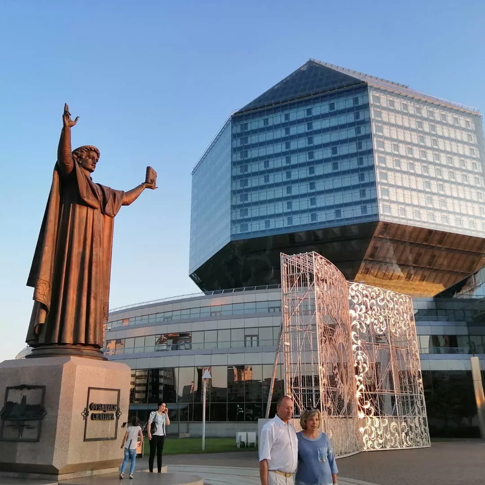
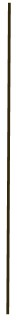

Вклад в инновационную экономику
22 июля 2012 года — с космодрома Байконур был запущен белорусский спутник дистанционного зондирования Земли. Наша страна вошла в список мировых космических держав.
Собственный спутник
Большой адронный коллайдер
За последнюю четверть века белорусские ученые достигли серьезных успехов и стали участниками крупнейших международных проектов
Наука в беларуси
В Беларуси успешно работают авторитетные научные школы мирового уровня по ряду фундаментальных направлений, включая оптику, квантовую электронику и фотонику, математику, теплофизику и энергетику, материаловедение, машиностроение, геологию, генетику и цитологию, биоорганическую химию, аграрные и общественные науки.

В начале 2000-х в Беларуси был взят курс на развитие инновационной экономики. И сегодня тематика фундаментальных и прикладных исследований НАН формируется под ее приоритеты. На данный момент окупаемость научных проектов составляет от 5 до 100 рублей на 1 рубль затрат.
“
— Мировая наука имеет ярко выраженный практико-ориентированный характер, и наша страна не исключение, — говорит председатель Президиума НАН Владимир Гусаков. — Сегодня НАН — мощная научно-производственная корпорация, центры, объединения, опытные производства и экспериментальные базы которой выпускают наукоемкую продукцию, изготовленную в большинстве случаев по отечественным технологиям. Поскольку бюджетные средства составляют только четверть необходимых объемов финансовых ресурсов, все остальное академия должна заработать. Поэтому мы активно участвуем во всех государственных программах, программах развития отраслей, Союзного государства, инновационных проектах министерств, ведомств и предприятий. Привлекаем иностранные гранты, работаем с зарубежными научными центрами. Без ложной скромности могу сказать, что уровень наших специалистов очень высок — мы постоянно получаем заказы на выполнение исследований или разработок.
На базе научных организаций НАН Беларуси действуют 16 международных центров и лабораторий по разработке и адаптации передовых технологий и их продвижению на зарубежные рынки. Академия имеет договоры о сотрудничестве с 90 иностранными академиями и научными центрами. Наши организации выполняют экспортные контракты с 59 государствами, наиболее масштабно — с Россией, Саудовской Аравией, Китаем, Украиной, Германией, Индией. Реализуются новые договоренности и экспортные контракты с коллегами из Австрии, Азербайджана, Армении, Венесуэлы, Вьетнама, Грузии, Индонезии, Ирана, Нидерландов, Польши, США, Туркменистана, Турции, Франции, Эквадора и других стран.
Предмет особой гордости — наша космическая отрасль. Мы работаем над новым спутником дистанционного зондирования Земли, который придет на смену тому, что сейчас несет вахту на орбите. В планах развитие целой сети малогабаритных аппаратов. Самым знаковым научным проектом независимой Беларуси несомненно стал собственный спутник дистанционного зондирования Земли. А дата 22 июля 2012 года, когда аппарат был выведен на орбиту, ознаменовала вхождение страны в список космических держав. Для ученых, которые трудились над проектом, это было непростое время.
“
— Старт то и дело откладывался по разным весомым причинам, — вспоминает академик НАН Беларуси Петр Витязь. — Мы очень волновались — заставили российских коллег проверить и перепроверить все несколько раз. А когда ракета-носитель “Союз” оторвалась от земли — казалось, время остановилось. В тот момент, когда стало понятно, что все прошло отлично, многие не сдерживали слез. Ведь завершился успехом самоотверженный труд многих людей. Сейчас Беларусь входит в число космических держав, мы проводим серьезнейшие исследования и имеем уникальные разработки. Это признано во всем мире — в сентябре 2018 года Минск принимал XXXI Международный конгресс Ассоциации участников космических полетов. Дорога к успеху была трудной, но интересной. Впрочем, я уверен, что мы только в начале пути.
Большой адронный коллайдер (ускоритель заряженных частиц на встречных пучках, предназначенный для разгона протонов и тяжелых ионов и изучения продуктов их соударений) построен на границе Швейцарии и Франции. БАК является самой крупной экспериментальной установкой в мире. В строительстве и исследованиях участвовали и участвуют более 10 тысяч ученых и инженеров более чем из 100 стран, в том числе и наши ученые из Института физики НАН Беларуси, Национального центра физики частиц высоких энергий БГУ, НИИ ядерных проблем БГУ. Они принимают активное участие во всех экспериментах, как дистанционных, так и непосредственно проходящих на БАК.
В 2015 году стартовал очередной этап исследований. Как члены коллабораций ATLAS и CMS белорусы имели обязательства отработать порядка 60 условных смен на центральном посту управления. Кроме того, наши физики задействованы в работе по обслуживанию (анализ текущего состояния и поддержка работоспособности) различных частей установки. К примеру, тех, в разработке и постройке которых принимали участие: торцевых электронного и адронного калориметров, мюонных стриповых камер. Сейчас БАК официально закрыт на ремонт, но продолжает работать в “усеченном” режиме. Например, недавно в СМИ появилось сообщение об открытии новых фундаментальных частиц — пентакварков.
ВАЖНЫЕ ДАТЫ
1—2 ноября 2007 года — состоялся крупнейший на постсоветском пространстве научный форум — I Съезд ученых Республики Беларусь.
5 декабря 2014 года — в рамках Государственной программы “Инновационные биотехнологии” на базе Института биофизики и клеточной инженерии НАН Беларуси открыт уникальный научно-медицинский центр “Клеточные технологии”.
